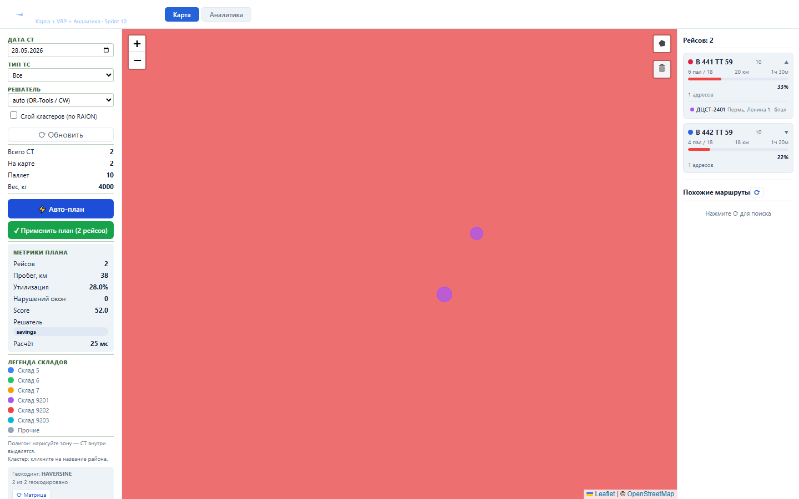
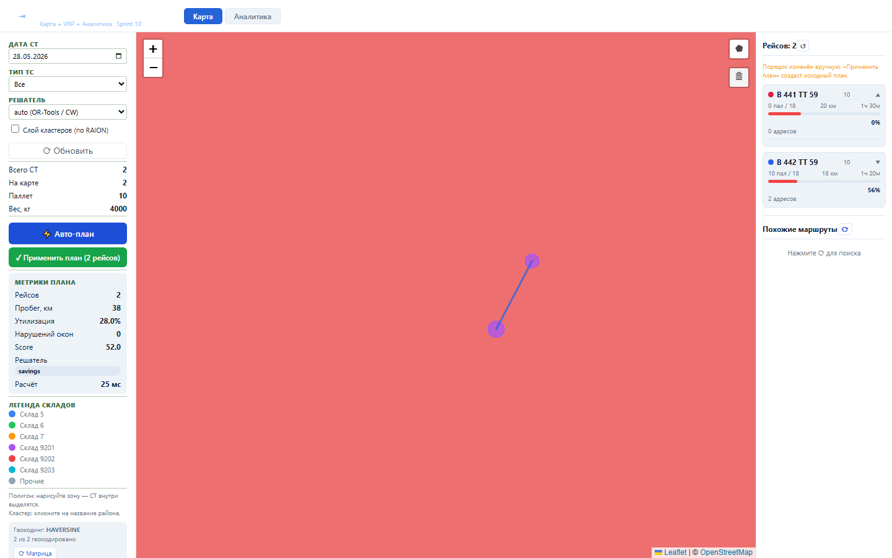

Блок даёт диспетчеру ручную корректировку VRP-плана: СТ можно перетащить из одного рейса в другой до применения плана.
На клиенте хранится локальная копия plan.routes[].stops; после переноса пересчитываются паллеты, вес и утилизация затронутых маршрутов.
Диспетчер видит изменённый состав и индикатор ручной правки, а backend не вызывается до явного применения плана.


Проверка: functional, UI smoke и load gates пройдены.